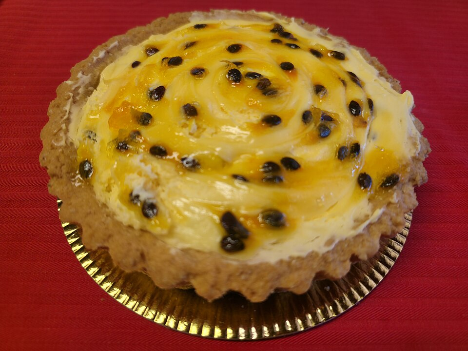

Doces · Tortas e bolos
Torta de maracujá com ganache

Ingredientes
- Massa: 300 g de farinha, 150 g de manteiga, 150 g de açúcar, 2 ovos, baunilha a gosto
- Recheio: 300 g de chocolate meio amargo, 150 g de creme de leite fresco
- Cobertura: 1 lata de leite condensado, 150 ml de suco de maracujá concentrado
Modo de preparo
- Misture a massa até desgrudar; forre forma desmontável e asse a 150 °C por 20 minutos.
- Derreta o chocolate em banho-maria, misture o creme e deixe esfriar. Espalhe sobre a massa.
- Misture o leite condensado com o suco e gele 1 hora. Cubra a torta. Para a teia: risque com palito do centro para fora. Sirva gelada.